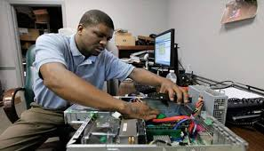

Bienvenue sur ma portefeuille
Me nommant Babacr fall Technicien informatique confirmé (6 ans d’expérience) spécialisé dans le support des parcs informatiques d’entreprises et de collectivités. Je mets les besoins des clients et des utilisateurs au cœur de ma démarche professionnelle, m’assurant d’instruire et former ces derniers aux bonnes pratiques afin d’optimiser les coûts et performances de maintenance. Réactif et m’assurant toujours de la priorité des tâches qui m’attendent, je garantis à mon employeur et à ses clients un support rapide et précis pour réduire au mieux la durée des pannes et leur impact sur la productivité.
En tant technicien en informatique je serais chargé de fournir de l’aide technique et de dépanner les usagers de systèmes informatiques au sein d’une entreprise.
J'aurais pour tâches principales d’installer et configurer les ordinateurs et autres équipements informatiques et d'assurer leur compatibilité. Et est aussi chargé d’installer et de configurer des logiciels et programmes informatiques. Et je pourrait aussi être responsable des transferts de données entre différents postes de travail ou entre différents organismes. Enfin, je serais un soutien informatique qui répond aux questions des usagers et leur fournit de l’assistance avec les différents matériels informatiques.
Image d'un Ingenieur en informatique

Cliquer ce lien di-dessous pour acceder a mon CV
DownloadVoici mes Contact
| Numero | Adresse Mail | Fixe | Adresse |
|---|---|---|---|
| 771234567 | babacar@gmail.com | 338355599 | Thiaroye Azur |
{kind=link}